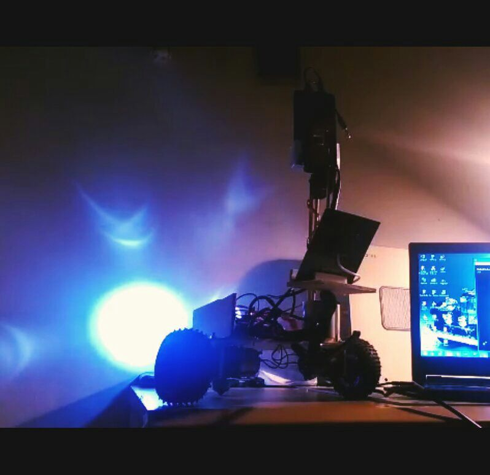
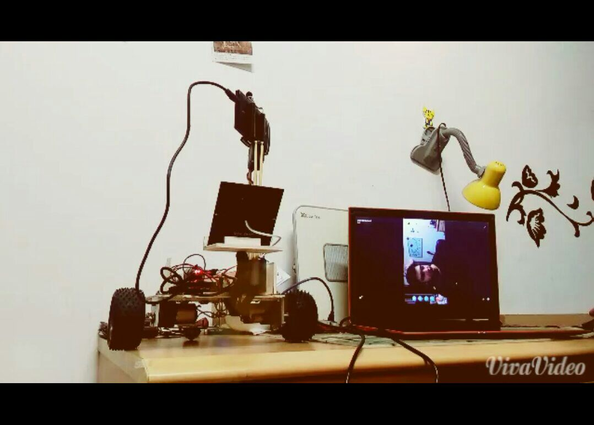
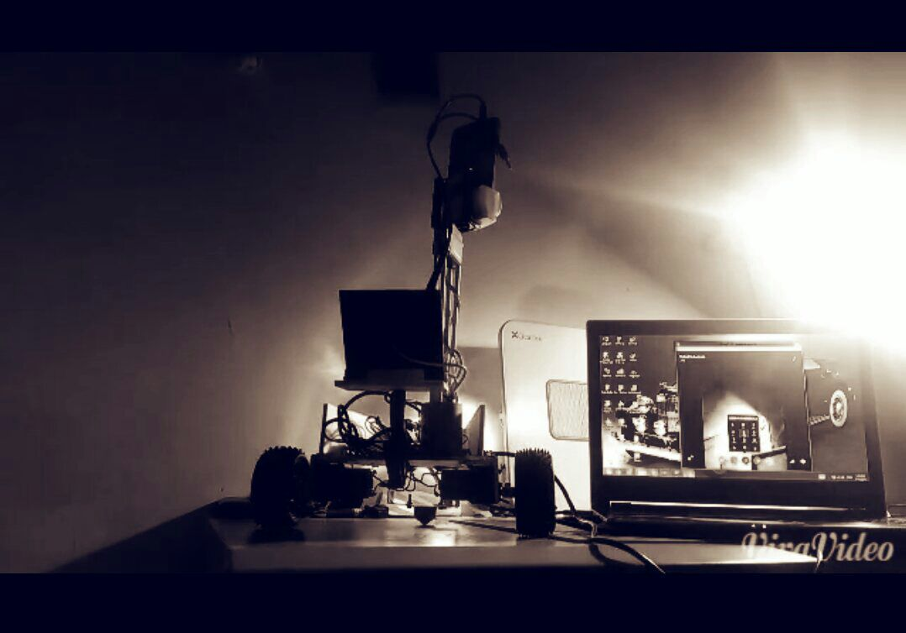
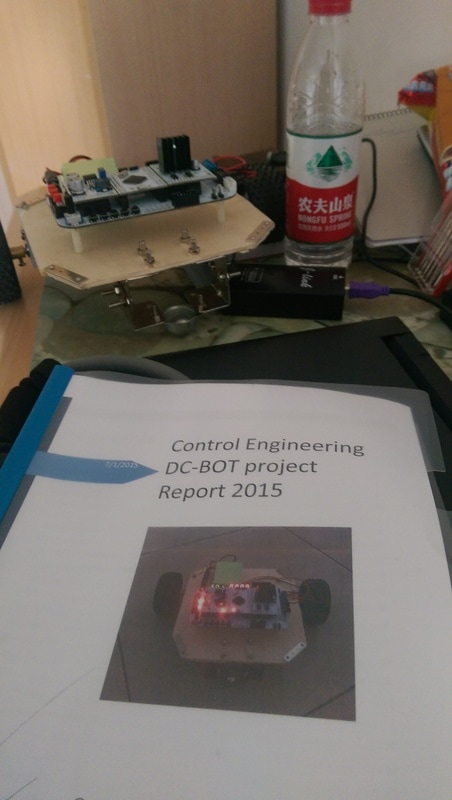
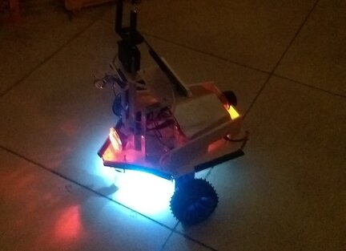

06 / PERSONAL PROJECT
DC-Cellbot Surveillance Bot
A solar-powered, camera-equipped two-wheeled robot with keypad-based remote control.

PROJECT OVERVIEW
The idea and implementation.
An extension of an earlier robot project, DC-Cellbot pairs a mobile platform with a camera and solar power. A DTMF sound module interfaced with the controller translates keypad tones into remote-control input.
This personal project explored a playful use of an established signalling technology for robot control.
Project gallery



